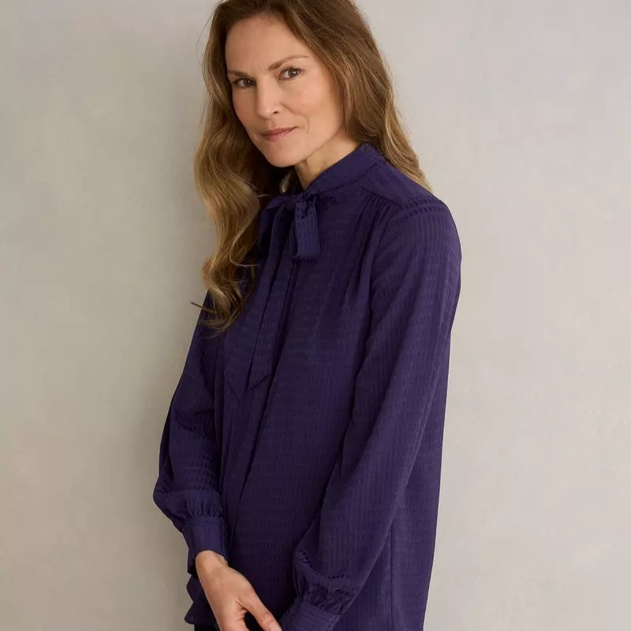
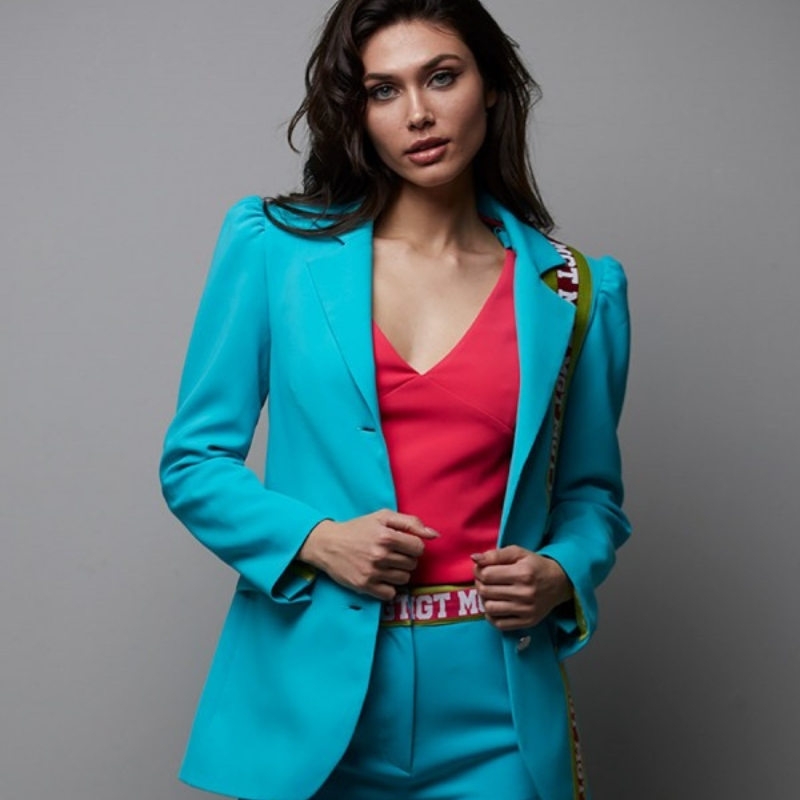
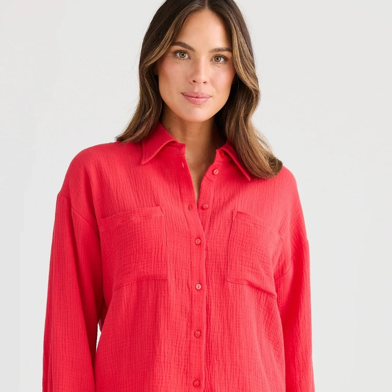
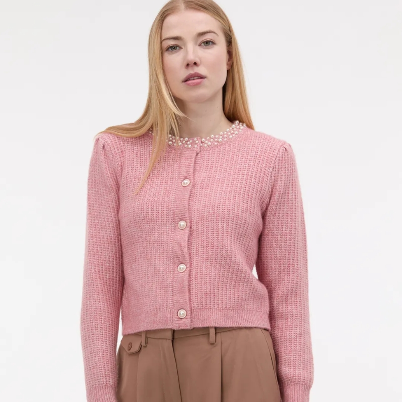
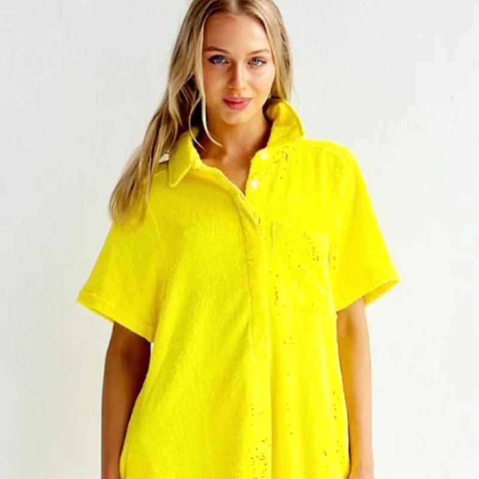
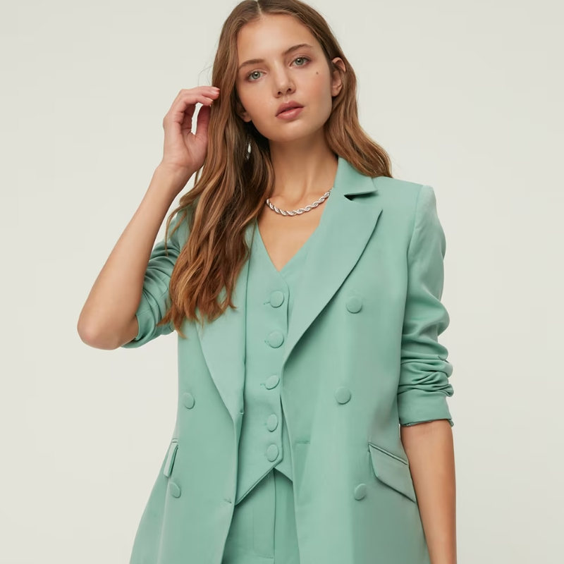

Ahogy a természet ébredezik, úgy vágyunk mi is arra, hogy lehúzzuk a nehéz téli kabátokat, és végre friss színeket vigyünk az öltözködésünkbe. A 2026-os tavaszi szezon a harmóniáról, a lágy pasztellárnyalatokról és a természet közelségéről szól. Bár a nagy divatházak minden évben kijelölik az irányt, érdemes ezekre csak iránymutatásként tekinteni – a legfontosabb ugyanis az, hogy olyan darabokat találj, amikben valóban önazonosnak érzed magad.
Nézzük, melyek azok az árnyalatok, amik idén tavasszal biztosan meghatározzák a divatot, és hogyan építheted be őket a ruhatáradba okosan!

Az idei év egyik legmeghatározóbb színe ez a titokzatos, az éjszakai égboltot idéző mély lila. Bár tavasszal általában a világosabb színek felé hajlunk, ez az árnyalat tökéletes választás egy elegáns tavaszi átmeneti kabáthoz vagy egy sikkes blézerhez. Remekül mutat ezüst kiegészítőkkel, és mivel sötétebb tónus, kiválóan alkalmas arra, hogy az irodai szettjeidet egy kis különlegességgel fűszerezze meg a szürke hétköznapokon.

Ez a szín a tiszta vizet és a természet erejét idézi, egyszerre nyugtató és energizáló hatású. Tavasszal egy ilyen árnyalatú kötött kardigán vagy egy lenge nadrág igazi ékköve lehet a megjelenésednek. Nagyszerűen kombinálható a tavaly is kedvelt fehérrel vagy bézzsel, így egy letisztult, mégis modern összhatást kapsz, ami a tavaszi szellő könnyedségét sugározza.

A korallvörös egy lágyabb, a lemenő nap fényét idéző változatban tér vissza idén. Ez a szín az optimizmust és az életigenlést hirdeti. Ha világosabb a bőröd, válassz belőle sálat vagy kiegészítőt, a sötétebb tónusúaknak viszont egy teljes egészében korall színű ruha is fenségesen állhat. Nagyon jól mutat a klasszikus sötétkék farmerral, ami minden tavaszi ruhatár megkerülhetetlen alapdarabja.

A korábbi évek púderes árnyalatai idén egy még légiesebb, majdnem áttetsző formában hódítanak. Ez a szín a lágyság és a nőiesség jelképe. Egy ilyen árnyalatú vékony blúz vagy egy könnyű tavaszi sál puhaságot visz az arcod közelébe. Ha nem szeretnél túlságosan kislányos hatást kelteni, érdemes egy kis szürkével vagy a már említett mélylilával megtörni az egyhangúságot.

Idén egy telítettebb, melegebb, már-már a tavaszi virágok szirmait idéző sárga érkezik a boltokba és a másodkézből vásárolt kincsek közé. Ez a szín maga a testet öltött napsütés! Mivel domináns árnyalat, gyakran elég egy-egy hangsúlyos darab belőle: egy tavaszi táska, egy szoknya vagy egy mintás felső, amiben felbukkan ez a tónus. Garantáltan jó kedvre derít, akárhányszor a tükörbe nézel.

A mentazöld egy hűvösebb, de nagyon tiszta árnyalat, ami a természet megújulását szimbolizálja. Egy ilyen színű vászonnadrág vagy egy könnyű tavaszi pulóver frissességet kölcsönöz a megjelenésednek. Különösen ajánlott azoknak, akik kedvelik a visszafogottabb, minimális stílust, de vágynak egy kis színes csavarra a szürke és a barna után.
Bár a kirakatok mindig az legújabb darabokat hirdetik, a legstílusosabb kincsek sokszor a múltból köszönnek vissza. A használt ruha üzletekben gyakran bukkanhatsz olyan egyedi darabokra, amelyek színeikben pontosan hozzák a legfrissebb trendeket, minőségükben viszont sokszor tartósabbak a tömeggyártott termékeknél.
A fenntartható divat lényege, hogy ne mindenáron az újat hajszold, hanem fedezd fel az értéket a már legyártott ruhákban is. Egy idén divatos színben tündöklő, de korábban már szeretett nadrág vagy blúz nemcsak egyedi karaktert ad a megjelenésednek, de a környezetedet is kíméled vele, hiszen nem pazarolunk el újabb erőforrásokat a gyártásra.
Bármelyik színt is választod idén tavasszal, a legfontosabb, hogy te jól érezd magad a bőrödben. Kísérletezz bátran az anyagokkal és az árnyalatokkal, és ne félj a saját utadat járni a divat világában!
Olvasd el ezt is: A nadrág, ami megváltoztatta a világot és a nők életét — megismerheted hogyan vált természetessé az, ami régen közfelháborodást keltett.